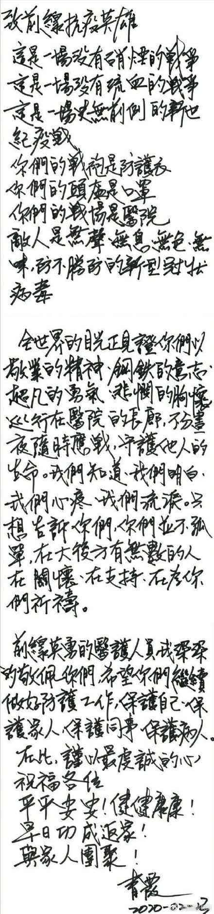

<!DOCTYPE html>
<html lang="zh-cn"></html>
<html>
  <head>
    <meta charset=UTF-8 />
    <title>林青霞.html</title>
    <style>
        #header {
            width:900px;height:100px;border:1px solid #dddddd;margin:10px auto;
            background-color:rgb(186, 228, 252);
            color:rgb(7, 7, 7);
            text-align:center;
            padding:5px;
        }

        #footer {
            width:900px;height:15px;border:1px solid #dddddd;margin:10px auto;
            background-color:rgb(186, 228, 252);
            color:rgb(15, 15, 15);
            text-align:center;
            padding:5px;
        }
        </style>
  </head>
  <body>

    <div id="header">
    <h1>林青霞写信致敬前线抗疫英雄</h1>
    </div>
    
    
    <div id="section"style="width:900px;height:2100px;border:1px solid #dddddd;margin:10px auto;text-align:left" >

    <p>
        最近武汉前线的一些医院，收到了一些来自台湾的捐献物资，其中还包括一封信，最后的署名是：青霞。
    </p>

    <p>
        这批物资确实是台湾著名演员林青霞所捐献，而给前线抗疫英雄的信也是她本人所写。
    </p>
    <h2>原文如下：</h2>
     
    </div>
    
    <div id="footer">
            全民抗疫
    </div>
    
    </body>
  
</html>


